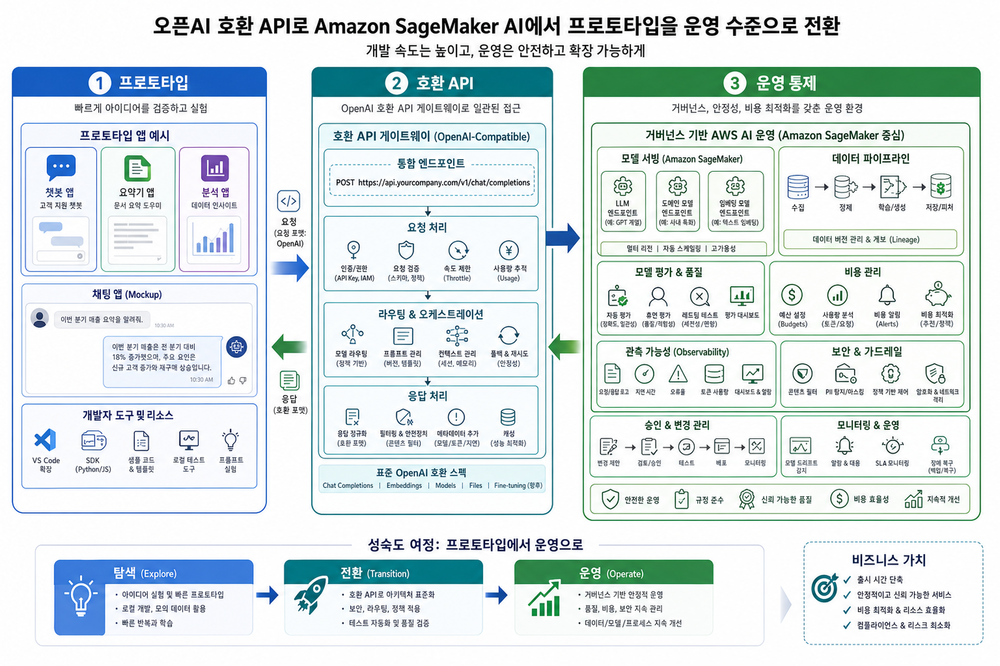
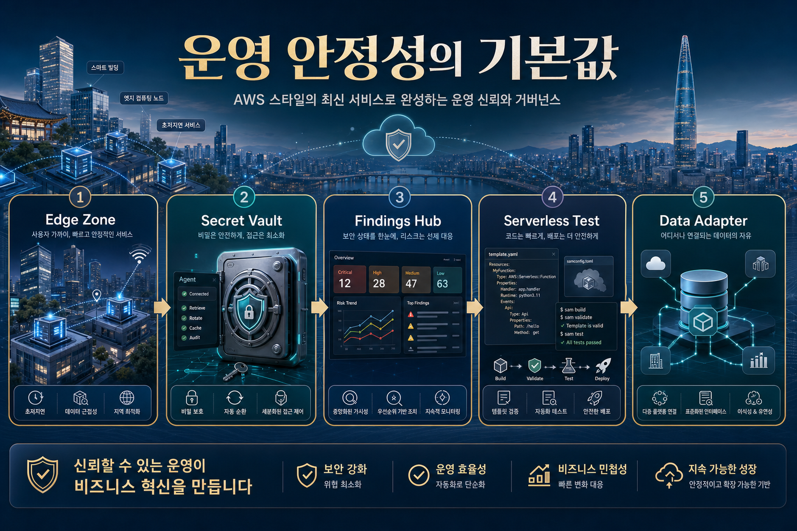

오늘의 한 줄 결론
OpenAI-compatible SageMaker endpoint, Kiro Web, ExtendDB, Secrets Manager Agent 개선, SAM CLI parity, Security Hub Extended, Local Zones 확장은 모두 기업 적용의 병목인 이전·개발·보안·지연시간·레지던시·운영성을 낮추는 업데이트다.
원문은 Weekly Roundup 형식이므로 개별 발표의 깊이는 제한적이다. 다만 여러 발표가 같은 방향을 가리킨다. AWS는 AI 개발자 경험과 엔터프라이즈 운영 통제 사이의 간극을 줄이고, 클라우드 선택지를 region 중심에서 edge/locality까지 넓히고 있다.
핵심 트렌드 분석
API 호환성이 AI 이전 비용을 낮춘다
Amazon SageMaker AI가 OpenAI-compatible inference API를 지원하면, 이미 OpenAI 형식으로 만들어진 앱이 AWS 운영 환경으로 이동할 때 코드 수정 부담이 줄어든다. 이는 단순 편의가 아니라 조달·보안·비용·데이터 경계 때문에 AWS로 가져와야 하는 기업에게 중요하다.
운영 안정성이 기본값으로 올라온다
Secrets Manager Agent pre-fetch, IAM role assumption, SDK retry behavior update, SAM CLI local parity는 장애 예방형 업데이트다. 화려한 데모보다 production incident를 줄이는 기반 체력이다.
지역성은 규제와 성능의 결합 문제다
Local Zones Istanbul은 데이터 레지던시와 low-latency 요구가 동시에 있는 산업에서 Region-only 설계가 충분하지 않을 수 있음을 보여준다.
AI 개발 환경은 브라우저와 agent로 이동한다
Kiro Web은 spec-driven development와 AI agent 개발 경험을 브라우저로 가져온다. 이는 개발 환경 표준화와 코드 리뷰·정책 적용 방식에도 영향을 준다.
기술 변화의 의미: Prototype에서 Governed Production으로

AI 도입의 다음 병목은 “모델을 써보는 것”이 아니라 “조직이 통제 가능한 방식으로 반복 배포하는 것”이다.
SageMaker AI OpenAI-compatible API
기존 Chat Completions 스타일 앱과 SDK를 유지하면서 endpoint만 바꾸는 migration path가 생긴다. 하지만 실제 기업 적용에서는 모델별 응답 품질, latency, token cost, safety policy, logging schema, evaluation benchmark를 함께 검증해야 한다.
ExtendDB와 SAM CLI
ExtendDB는 DynamoDB semantics를 로컬·대체 backend에 연결할 수 있게 하고, SAM CLI의 CloudFormation Language Extensions 지원은 local test와 production template 차이를 줄인다. 둘 다 개발 속도보다 재현 가능한 개발·테스트 체계가 핵심이다.
| 발표/업데이트 | 기업 적용 의미 | 확인해야 할 질문 |
|---|---|---|
| Amazon SageMaker AI OpenAI-compatible APIs | OpenAI 기반 프로토타입을 AWS 운영 경계로 이전하기 쉬워짐 | 응답 품질 회귀, 비용, latency, observability schema는 어떻게 검증할 것인가? |
| AWS Local Zones Istanbul | 데이터 레지던시와 low-latency를 동시에 요구하는 워크로드 선택지 확대 | 국가/도시 단위 규제와 네트워크 지연 요구가 실제 아키텍처 의사결정에 반영됐는가? |
| Secrets Manager Agent pre-fetch | secret retrieval latency와 권한 경계 문제 완화 | startup path, cache TTL, IAM role boundary, rotation policy가 문서화됐는가? |
| Security Hub Extended | 3rd-party security finding 통합 가시성 확대 | 중복 finding, severity mapping, remediation ownership을 누가 관리하는가? |
| Kiro Web | AI 개발·spec-driven workflow 접근성 향상 | 코드·스펙·agent action의 감사 로그와 리뷰 체계가 있는가? |
한국 기업 관점 시사점
1. AI 전환은 “AWS 안으로 이전”보다 “운영모델 이전”이다
OpenAI-compatible endpoint는 이전을 쉽게 보이게 하지만, 한국 대기업·금융·제조사는 모델 선택보다 통제권, 데이터 경계, 승인 프로세스, 비용 배부가 더 중요하다. API 교체와 함께 AI 운영 표준을 정의해야 한다.
2. 해외 법인/글로벌 서비스는 Locality 전략을 재검토해야 한다
Local Zones 사례는 국내뿐 아니라 튀르키예, 동남아, 유럽 등 현지 레지던시 요구를 가진 사업장에 cloud edge 선택지를 제공한다. 한국 본사 주도의 글로벌 플랫폼은 region/local zone/edge 기준표가 필요하다.
3. 개발자 생산성 도구는 보안·감사 체계와 같이 도입해야 한다
Kiro Web 같은 AI 개발 도구는 빠르지만, spec 변경·코드 생성·agent action의 검토 기준이 없으면 shadow AI 개발로 흐를 수 있다.
실행 전략: 30일 안에 할 일

- AI API 호환성 PoC를 표준화한다. 기존 OpenAI-style 앱 1개를 선정해 SageMaker AI endpoint 호출, 평가셋, latency/cost dashboard, rollback plan을 만든다.
- Secret retrieval path를 측정한다. startup latency, rotation impact, IAM role assumption boundary를 점검하고 pre-fetch 적용 후보를 분류한다.
- Local 개발·테스트 parity를 높인다. SAM CLI와 CloudFormation Language Extensions를 사용하는 템플릿을 로컬 테스트 체계에 반영한다.
- Container image 공급망 inventory를 갱신한다. Bitnami/ECR Public 변경처럼 registry source가 바뀔 수 있는 외부 base image 목록을 점검한다.
- AI 개발 도구 governance를 먼저 쓴다. Kiro Web 등 AI 개발도구 사용 시 spec repository, approval, prompt/template reuse, artifact retention 기준을 정한다.
리스크와 거버넌스 고려사항
API 호환성 착시
OpenAI-compatible이라고 해서 모든 endpoint behavior가 동일하다는 뜻은 아니다. streaming, tool call, error schema, rate limit, tokenization 차이를 테스트해야 한다.
보안 finding 과잉
Security Hub 통합이 늘수록 finding volume도 늘어난다. severity 정규화와 책임자 매핑 없이는 alert fatigue가 커질 수 있다.
지역 인프라 비용/운영 복잡도
Local Zone은 latency와 레지던시 이점이 있지만, 서비스 가용 범위와 네트워크 비용, 운영 책임 모델을 같이 검토해야 한다.
출처와 수집 메타데이터
- 원문: AWS Weekly Roundup: AWS Local Zones in Istanbul, open-source ExtendDB, Kiro Web, and more (May 25, 2026)
- 출처 블로그: AWS News Blog
- 발행일: 2026-05-26 05:11:10 KST
- 수집일: 2026-05-26 07:00 KST
- 중복 판정: 기존 LLM Wiki raw collection 및 GBrain local markdown의 원문 링크·파일명·정규화 제목 기준 신규 1건
이미지 프롬프트 부록
Image Prompt 1
목적: Hero / 전략 신호
삽입 위치: Hero 섹션 직후
권장 비율: 16:9
Alt: AWS 주간 전략 신호를 보여주는 엔터프라이즈 클라우드 관제실 이미지
Executive Korean tech blog hero illustration, 16:9. Theme: AWS weekly roundup for enterprise AI, data, and cloud strategy. Show a modern Seoul enterprise cloud command center with abstract AWS-like cloud infrastructure (no official logos), regional edge nodes, data lake streams, AI development agents, and governance dashboard. Premium editorial style, clean composition, deep navy and electric orange accents, readable Korean headline inside image: "AWS 주간 전략 신호" and subtitle "호환성 · 운영성 · 지역성". No real brand logos, no small illegible text.
Image Prompt 2
목적: SageMaker AI 호환 API 인포그래픽
삽입 위치: OpenAI-compatible API 분석 섹션
권장 비율: 16:9
Alt: 프로토타입에서 운영 통제로 전환되는 SageMaker AI 호환 API 인포그래픽
Korean enterprise infographic illustration, 16:9. Theme: OpenAI-compatible APIs on Amazon SageMaker AI and migration from prototype to governed production. Visualize three connected layers: Prototype Apps, Compatible API Gateway, Governed AWS AI Operations. Include simple Korean labels generated in the image: "프로토타입", "호환 API", "운영 통제". Use polished vector editorial style, data pipelines, model endpoint blocks, evaluation and cost controls, high legibility, no official logos.
Image Prompt 3
목적: 운영 안정성 로드맵
삽입 위치: 리스크와 실행 전략 섹션
권장 비율: 16:9
Alt: Local Zones, Secrets Manager, Security Hub, SAM CLI, ExtendDB를 연결한 운영 안정성 로드맵
Korean executive visual, 16:9. Theme: operational resilience and cloud governance in AWS updates: Local Zones, Secrets Manager Agent, Security Hub, SAM CLI, ExtendDB. Create a strategic roadmap image with city edge zone, secure secret vault, security findings hub, serverless template testing, and portable data adapter. Include Korean title inside image: "운영 안정성의 기본값". Premium blog illustration, clean readable layout, no official logos, no tiny text.